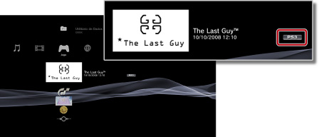

Jogo > Reproduzir jogos transferidos da PlayStation®Store > Jogar jogos transferidos
Jogar jogos transferidos
Pode jogar os jogos que transferir (comprados ou gratuitos) de  (PlayStation®Store). A forma como joga um jogo varia consoante o tipo de jogo. As informações sobre o tipo de jogo são apresentadas junto ao ícone do jogo.
(PlayStation®Store). A forma como joga um jogo varia consoante o tipo de jogo. As informações sobre o tipo de jogo são apresentadas junto ao ícone do jogo.

Nota
Para ordenar os jogos por tipo, seleccione um ícone de jogo, prima o botão  e seleccione [Ordenar por] > [Formatar] no menu das opções.
e seleccione [Ordenar por] > [Formatar] no menu das opções.
Jogar software de formato PlayStation®3

Normalmente, pode jogar jogos de software de formato PlayStation®3 transferidos de (PlayStation®Store) da mesma forma que os jogos de software de formato PlayStation®3 disponíveis em suporte de disco. Para mais informações, consulte  (Jogo) > [Jogar software de formato PlayStation®3] neste manual.
(Jogo) > [Jogar software de formato PlayStation®3] neste manual.
Jogar jogos de software de formato PlayStation®
Normalmente, pode jogar jogos de software de formato PlayStation® transferidos de (PlayStation®Store) da mesma forma que os jogos de software de formato PlayStation® disponíveis em suporte de disco. Para mais informações, consulte (Jogo) > [Jogar software de formato PlayStation®2 / PlayStation®] neste manual.
Manuais do Software
Poderá visualizar o manual do software de formato PlayStation® que transferiu. Para visualizar o manual, prima o botão PS no comando sem fios durante o jogo e, em seguida, seleccione [Manual do software] no ecrã apresentado.
Jogos em que é necessário trocar de disco
Alguns jogos do software de formato PlayStation® transferidos requerem a mudança de discos. Quando os jogar no sistema PS3™, a mudança de discos é efectuada virtualmente. Se for apresentada uma mensagem a solicitar que mude o disco, prima o botão PS no comando sem fios e, em seguida, seleccione [Mudança de disco] no ecrã apresentado. Siga as instruções no ecrã para concluir a operação.
Seleccione um jogo de formato PC Engine ou NEOGEO.
Para mais informações sobre como jogar jogos do formato PC Engine ou NEOGEO, consulte o manual de instruções fornecido com o jogo. O método para visualizar o manual de instruções poderá variar consoante o jogo. Os formatos PC Engine e NEOGEO poderão não estar disponíveis consoante o país ou região.